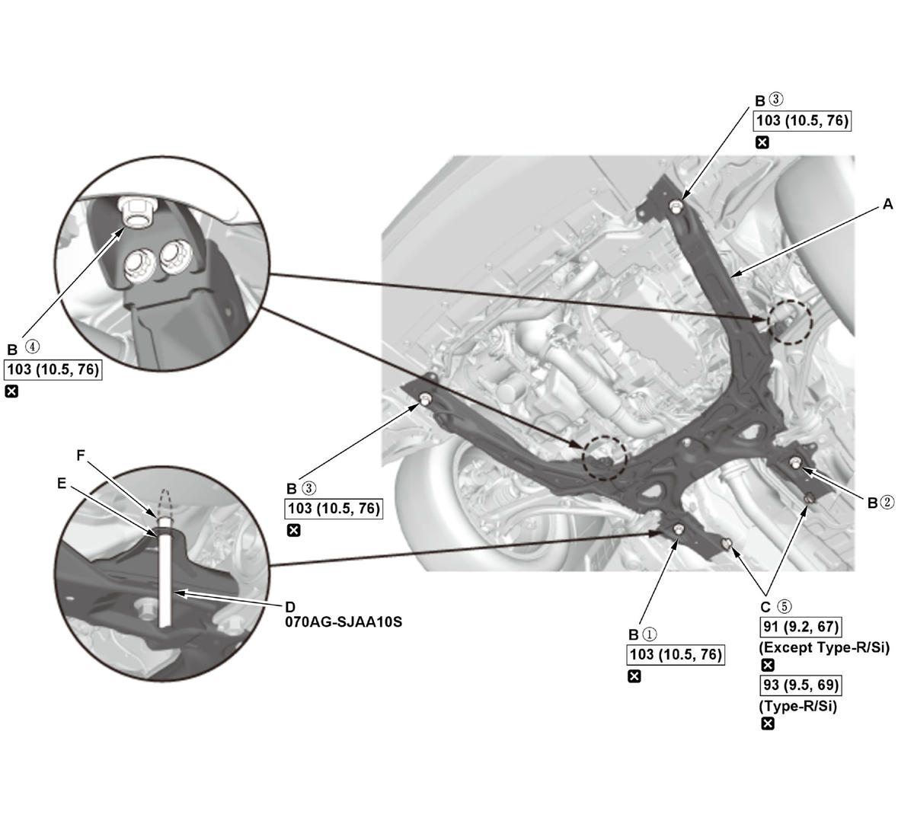
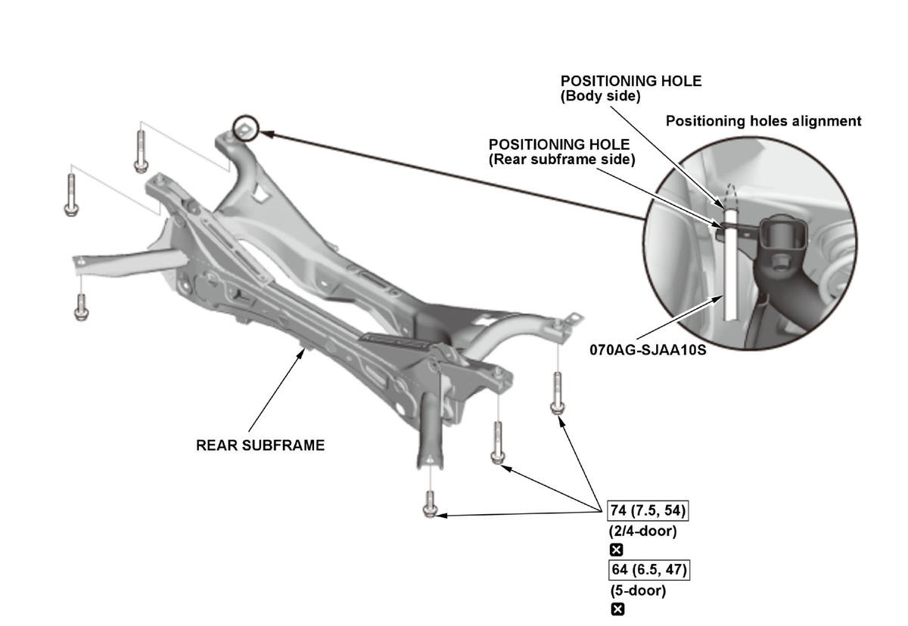

Removal and Installation
Front Subframe
- Front Subframe - Tightening Torque
NOTE:
- How to read the torque specifications .
- Align the front subframe with the subframe alignment pin.
- Align the front subframe in the following sequence.
1. Lift the front subframe (A) up to the body, and loosely install the new subframe mounting bolts (B) and the new front subframe rear stay mounting bolts (C).

Courtesy of HONDA, U.S.A., INC.2. Insert the subframe alignment pin (D) through the positioning hole (E) on the right rear subframe, and into the positioning hole (F) on the body, then loosely tighten the subframe right rear mounting bolt.
3. Insert the subframe alignment pin through the positioning hole on the left rear subframe, and into the positioning hole on the body, then loosely tighten the subframe left rear mounting bolt.
4. Tighten the subframe mounting bolts to the specified torque in the numbered sequence as shown. Use the subframe alignment pin when tightening the rear side subframe mounting bolts.
5. Check all of the subframe mounting bolts, and retighten if necessary.
6. Tighten the front subframe rear stay mounting bolts to the specified torque.
7. After reinstalling all removed parts, check and adjust the front wheel alignment
.
Rear Subframe
- Rear Subframe - Tightening Torque
NOTE: During installation, align both positioning holes on the rear subframe with the positioning holes on the body using the subframe alignment pin as a guide. First align the right positioning hole, and next align the left positioning hole.
1. Install the rear subframe.

Courtesy of HONDA, U.S.A., INC.2. After reinstalling all removed parts, check and adjust the rear wheel alignment .